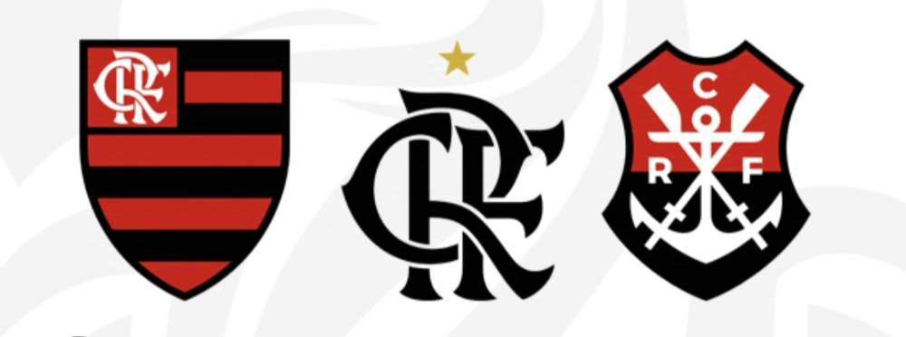
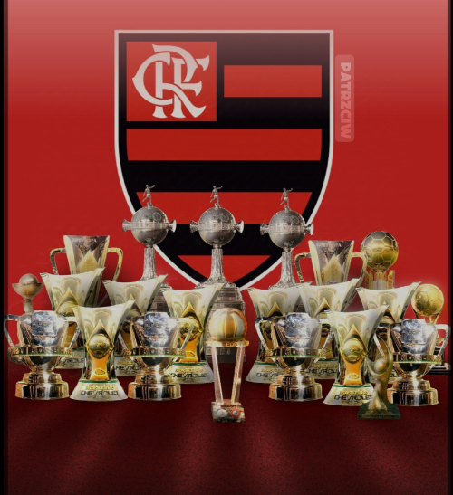

HISTÓRIA DO FLAMENGO
O Clube de Regatas do Flamengo (mais conhecido simplesmente como Flamengo, popularmente pelos apelidos de Fla, Mengo e Mengão, e cujo acrônimo é CRF) é uma agremiação poliesportiva brasileira com sede na cidade do Rio de Janeiro, capital do estado homônimo. Fundado no bairro do Flamengo,para disputas do esporte remo em 17 de novembro de 1895/2/12.tornou-se um dos clubes mais bem-sucedidos e populares do esporte brasileiro, especialmente pelo futebol. Tem como suas cores tradicionais o vermelho e o preto e como seus maiores rivais esportivos o Vasco da Gama, o Fluminense e o Botafogo
CONHEÇA AS PRINCIPAIS GLÓRIAS DO FLAMENGO AO LONGO DE MAIS UM SÉCULO DE HISTÓRIA
Títulos | A fundação | O início do futebol | Os tricampeonatos estaduais|Mundial interclubes - 1981|Taça Libertadores da América - 1981, 2019 e 2022 (invicto) |Copa Mercosul - 1999|Recopa Sul-Americana - 2020| Campeonato Brasileiro (8 títulos) - 1980, 1982,j 1983, 1987, 1992, 2009, 2019 e 2020 Copa do Brasil - 1990 (invicto), 2006, 2013 e 2022 | Supercopa do Brasil - 2020 e 2021
Libertadores da América
libertadores da América 2019 a final mais emocionante depois de 38 anos flamengo vira no final do jogo foi epico memoravel na voz de joao Guilherme
Então e isso ! Espero que tenha gostado do nosso artigo com essa curiosidade sobre o flamengo e sua simpática história